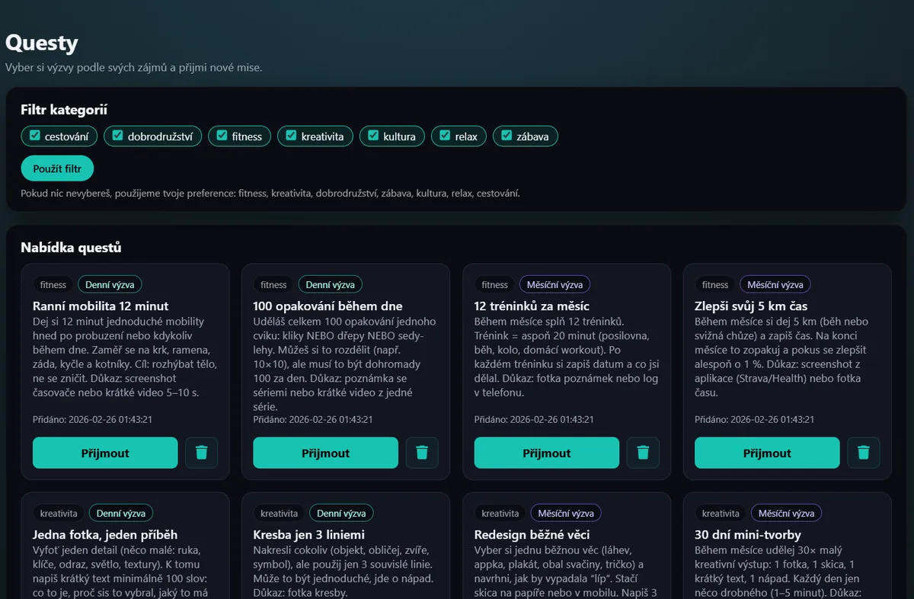

Motivo je full-stack sociální platforma spojující vzdělávání s herní komunitou. Obsahuje systém úkolů, XP, žebříčky, chat a interakce jako follow či komentáře. Díky pokročilé roli uživatelů (RBAC) a vlastnímu zabezpečenému backendu (PHP/MySQL) nabízí komplexní správu obsahu. Projekt je postaven na robustní architektuře pro maximální uživatelskou angažovanost.
Zobrazit projekt